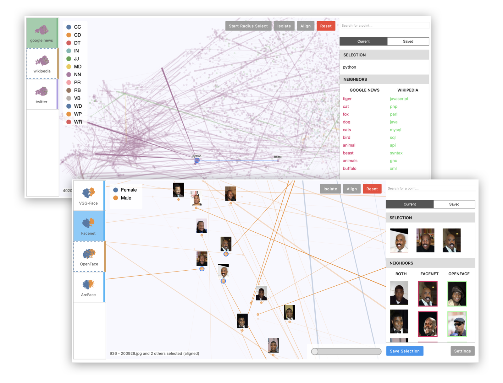
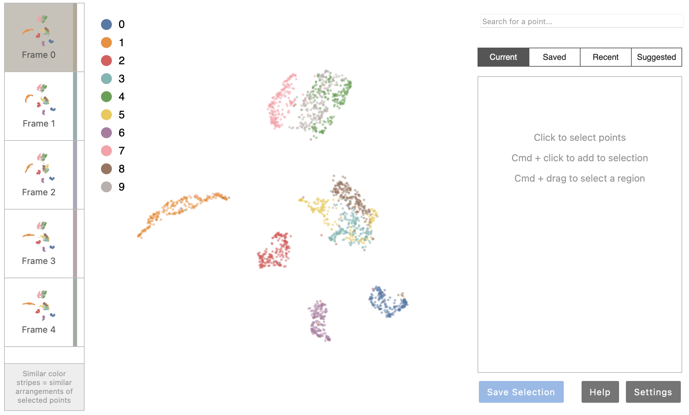

Package emblaze
Emblaze is a Jupyter notebook widget for visually comparing embeddings using animated scatter plots. It bundles an easy-to-use Python API for performing dimensionality reduction on multiple sets of embedding data (including aligning the results for easier comparison), and a full-featured interactive platform for probing and comparing embeddings that runs within a Jupyter notebook cell.

Installation
Compatibility Note: Note that this widget has been tested using Python >= 3.7. If you are using JupyterLab, please make sure you are running version 3.0 or higher. The widget currently does not support displaying in the VS Code interactive notebook environment.
Install Emblaze using pip:
pip install emblaze
The widget should work out of the box when you run jupyter lab (see
"Quickstart" below).
Jupyter Notebook note: If you are using Jupyter Notebook 5.2 or earlier, you may also need to enable the nbextension:
jupyter nbextension enable --py --sys-prefix emblaze
Standalone Demo
Although the full application is designed to work as a Jupyter widget, you can run a standalone version with most of the available features directly in your browser. To do so, simply run the following command after pip-installing the package (note: you do not need to clone the repository to run the standalone app):
python -m emblaze.server
Visit localhost:5000 to see the running application. This will allow you to
view two demo datasets: one showing five different t-SNE projections of a subset
of MNIST digits, and one showing embeddings of the same 5,000 words according to
three different data sources (Google News, Wikipedia, and Twitter).
To add your own datasets to the standalone app, you can create a directory containing your saved comparison JSON files (see Saving and Loading below), then pass it as a command-line argument:
python -m emblaze.server /path/to/comparisons
Quickstart
Let's demonstrate the use of Emblaze to compare dimensionality
reduction plots of the MNIST dataset. In a Jupyter notebook, use the following
code to retrieve the MNIST dataset (or load your own feature and label data as
variables X and Y):
from tensorflow.keras.datasets import mnist
import numpy as np
_, (x_test, y_test) = mnist.load_data()
# Get a random subset of the data
indexes = np.random.choice(x_test.shape[0], size=2000, replace=False)
X = x_test[indexes].reshape(-1, 28*28)
Y = y_test[indexes]
The Emblaze viewer takes two basic objects as input for visualization: an
EmbeddingSet, which contains
one or more coordinate matrices as well as color-coding information, and a
Thumbnails object, which describes how
each point in the visualization should be described (typically using a
combination of text and/or images).
First, let's construct the EmbeddingSet. To do so, we first create a high-dimensional
Embedding to contain the X and Y matrices we defined above. We will also
compute the nearest neighbors for each point, which will be displayed in the
sidebar of the visualization.
import emblaze
emb = emblaze.Embedding({emblaze.Field.POSITION: X, emblaze.Field.COLOR: Y}, metric='cosine')
emb.compute_neighbors()
Next, we can project this embedding five times using random initializations of UMAP (a common dimensionality reduction technique). We compute neighbors here again, as we would like to study neighborhood differences in the DR plots. (If we were comparing multiple high-dimensional coordinate sets, such as different word embedding models, we would not compute neighbors again here. See the Defining Comparisons section below for more details.)
variants = emblaze.EmbeddingSet([
emb.project(method=emblaze.ProjectionTechnique.UMAP) for _ in range(5)
])
variants.compute_neighbors(metric='euclidean')
Now, let's create some thumbnails to represent these points visually. Since
MNIST consists of images, we will use the ImageThumbnails class:
thumbnails = emblaze.ImageThumbnails(X.reshape(-1, 28, 28, 1))
Finally, we can initialize an emblaze.Viewer
object, which renders the visualization when printed:
w = emblaze.Viewer(embeddings=variants, thumbnails=thumbnails)
w
You should see the Emblaze visualization appear in the cell output:

Using Emblaze
Once you've loaded the Emblaze viewer, you can interact with the plot to start making comparisons of points and clusters. Emblaze offers the following features to support comparative analysis:
Star Trail visualization
When you click a frame thumbnail in the browser to the left of the main scatter plot, widening lines appear on the plot radiating out from particular points. This visualization, which we call a Star Trail visualization, highlights points whose neighbor sets change the most from one frame to another. When you click the frame thumbnail again, the points will smoothly animate along their Star Trails to arrive at their positions in the new frame.
Controllable animation
When in the comparison view (and the Star Trail plot is visible), you can manually control the interpolation of the plot from one frame to the other. Simply drag the slider in the bottom right corner of the plot. The plot remains interactive while in this interpolated state, so you can drag the slider halfway and then find points of interest.
Selections
You can make selections in Emblaze by clicking points in the scatter plot. You can add to the selection by holding Cmd (Mac) or Ctrl (other operating systems) and clicking. Additionally, you can select multiple points at once by holding Cmd/Ctrl and click-and-dragging to define a lasso region. To select points within a high-dimensional radius of a point, select the central point, then click Start Radius Select.
You can also read and write the selection programmatically by accessing the
Viewer's selectedIDs property.
Nearest neighbor lines
When a single point is selected, blue lines radiate from the selected point to
its nearest neighbors in the high-dimensional space (see Ancestor Neighbors
for more details). You can configure how many of these neighbors are highlighted
by changing the Viewer's numNeighbors
property, or by going to the Settings menu in the lower-right corner of the widget
interface.
Selection info
As you define selections, information about the selected
points and their nearest neighborhoods is shown in the sidebar to the right of
the plot under the Current tab. At the top, you can see the names, descriptions,
and/or images defined by the Thumbnails
object for the selected points. In the Neighbors section, you can see the top
10 nearest neighbors of the selection, which are weighted by their total rank
with respect to each selected point. When you are comparing two frames (see
above), the Current sidebar pane also updates to show you Common Changes in
the nearest neighborhood of the selection between the two frames.
Aligning and Isolating
For large datasets, it may be helpful to reduce the number of points visible in
the scatter plot in order to focus on a selection of interest. To do so, select
a set of points and then click the Isolate button. This will limit the visible
points to the selected points and their high-dimensional nearest neighbors in
all frames. You can also set the visible points programmatically by accessing
the Viewer's filterIDs property.
Relatedly, when animating between frames you may wish to minimize unnecessary
motion of a set of points (for example, if a cluster rotates in a DR plot due to
random initialization effects). To minimize the motion of a set of points with
respect to the rest of the plot, select the points and click Align. You can
also do this programmatically by setting the Viewer's
alignedIDs property.
Suggested Selections
Emblaze includes a novel clustering algorithm designed to surface groups of points that change meaningfully from one frame to another. Check out the Suggested pane of the sidebar to see clustering recommendations relevant to the area of the plot you are currently looking at.
Color Stripes
To highlight variation between different frames, each
frame thumbnail in the browser to the left of the visualization has a color
associated with it. These colors are dynamically chosen to reflect differences
between the frames with respect to the current selection. In other words,
frames in which the selected points are arranged similarly will have similar
colors, while frames that have highly divergent arrangements of the points
will have starkly different colors. See the compute_colors
function for more information.
Interactive Notebook Analysis
Once you have loaded a Viewer instance in the notebook, you can read and write
its properties to dynamically work with the visualization. The following
properties are reactive:
embeddings(EmbeddingSet) Modify this to change the entire dataset that is displayed.thumbnails(Thumbnails) Represents the image or text thumbnails displayed on hover and click.currentFrame(int) The current frame or embedding space that is being viewed (from0tolen(embeddings)).selectedIDs(List[int]) The selected ID numbers. Unless you provide custom IDs when constructing theEmbeddingSet, these are simply zero-indexed integers.alignedIDs(List[int]) The IDs of the points to which the embedding spaces are aligned (same format asselectedIDs). Alignment is computed relative to the positions of the points in the current frame.filterIDs(List[int]) The IDs of the points that are visible in the plot (same format asselectedIDs).colorScheme(string) The name of a color scheme to use to render the points. A variety of color schemes are available, listed insrc/colorschemes.ts. This property can also be changed in the Settings panel of the widget.previewMode(string) The method to use to generate preview lines, which should be one of the values inutils.PreviewMode.
Saving and Loading
You can save the data used to make comparisons to JSON, so that it is easy to
load them again in Jupyter or the standalone application without re-running the
embedding/projection code. Comparisons consist of an EmbeddingSet (containing
the positions of the points in each 2D projection), a Thumbnails object (dictating
how to display each point), and one or more NeighborSets (which contain the
nearest-neighbor sets used for comparison and display).
To save a comparison, call the save_comparison() method on the Viewer. Note
that if you are using high-dimensional nearest neighbors (most use cases), this
method by default saves both the high-dimensional coordinates and the nearest-neighbor
IDs. This can create files ranging from hundreds of MB to GBs. To store
only the nearest neighbor IDs, pass ancestor_data=False as a keyword argument.
Note that if you disable storing the high-dimensional coordinates, you will be
unable to use tools that depend on distances in hi-D space (such as the
high-dimensional radius select).
To load a comparison, simply initialize the Viewer as follows:
w = emblaze.Viewer(file="/path/to/comparison.json")
Defining Comparisons
Because Emblaze only depends on having a set of embeddings and thumbnails, it supports making a wide variety of comparisons. In the simplest case, the matrix of 2D coordinates, color values, and text descriptions is sufficient to populate the visualization. However, things get a little trickier when we start to incorporate nearest-neighbor analysis, a central part of defining what level we are performing comparison on. On which set of coordinates should the nearest neighbors be computed? Emblaze gives you the flexibility to choose which neighbor sets are displayed under which contexts, but doing so requires some understanding of how neighbors are used under the hood.
Inherited Neighbor Sets
When you call compute_neighbors
on an Embedding or EmbeddingSet instance, a Neighbors
object is created that contains the nearest neighbor matrix for the coordinates
defined in that embedding object.
Now, when you create additional Embedding or EmbeddingSet objects that
derive from the previously-defined embeddings, the Neighbors object is
inherited by default. This means that if you project the embedding down to 2D
using the project()
method, the nearest neighborhoods that are shown in the Star Trail or sidebar
will be from the high-dimensional space. This is often desirable, since
dimensionality reduction plots are known to distort nearest neighborhoods
for large datasets.
However, sometimes we do want to compare nearest neighborhoods in the projected
data (such as in the Quickstart example above, where we compared five different
random initializations of UMAP). If you'd like the differences in nearest
neighborhoods to be shown in the Star Trail visualization, simply call
compute_neighbors
again on the dimensionally-reduced EmbeddingSet.
Recent and Ancestor Neighbors
It is worth noting that sometimes we want the nearest neighbors shown in the
Current sidebar pane to be different than those used to compute Star Trails,
Suggested Selections, Color Stripes, etc. To support this, Emblaze keeps a parent
pointer for each Embedding object as you generate them, e.g. using the
project() method. At visualization time, Emblaze retrieves two neighbor
sets from the parent tree (both of these may correspond to the same Neighbors
object, but not necessarily). Each of these two sets are used in different parts of
the visualization:
- Recent neighbors. These neighbors, which can be accessed using the
get_recent_neighborsmethod onEmbeddingSetorEmbedding, are the neighbors inherited from the most recent parent of the current embedding (or the current one, if it has neighbors). These are used to perform all algorithmic comparisons of frames, including Star Trail visualizations, Suggested Selections, and Color Stripes. - Ancestor neighbors. These neighbors can be accessed using the
get_ancestor_neighborsmethod onEmbeddingSetorEmbedding. They are the neighbors computed in the oldest parent of the current embedding (which may be the current one if it has no parents with computed neighbors). These are the neighbors displayed in the sidebar and by the nearest neighbor lines, and are typically used to communicate the high-dimensional nearest neighbors regardless of the level at which embeddings are being compared.
Expand source code
#!/usr/bin/env python
# coding: utf-8
# Copyright (c) venkatesh-sivaraman.
# Distributed under the terms of the Modified BSD License.
"""
Emblaze is a Jupyter notebook widget for **visually comparing embeddings** using
animated scatter plots. It bundles an easy-to-use Python API for performing
dimensionality reduction on multiple sets of embedding data (including aligning
the results for easier comparison), and a full-featured interactive platform for
probing and comparing embeddings that runs within a Jupyter notebook cell.

# Installation
**Compatibility Note:** Note that this widget has been tested using Python >= 3.7.
If you are using JupyterLab, please make sure you are running version 3.0 or
higher. The widget currently does not support displaying in the VS Code
interactive notebook environment.
Install Emblaze using `pip`:
```bash
pip install emblaze
```
The widget should work out of the box when you run `jupyter lab` (see
"Quickstart" below).
_Jupyter Notebook note:_ If you are using Jupyter Notebook 5.2 or earlier, you
may also need to enable
the nbextension:
```bash
jupyter nbextension enable --py --sys-prefix emblaze
```
## Standalone Demo
Although the full application is designed to work as a Jupyter widget, you can
run a standalone version with most of the available features directly in your
browser. To do so, simply run the following command after pip-installing the
package (note: you do _not_ need to clone the repository to run the standalone
app):
```bash
python -m emblaze.server
```
Visit `localhost:5000` to see the running application. This will allow you to
view two demo datasets: one showing five different t-SNE projections of a subset
of MNIST digits, and one showing embeddings of the same 5,000 words according to
three different data sources (Google News, Wikipedia, and Twitter).
To add your own datasets to the standalone app, you can create a directory
containing your saved comparison JSON files (see Saving and Loading below),
then pass it as a command-line argument:
```bash
python -m emblaze.server /path/to/comparisons
```
---
# Quickstart
Let's demonstrate the use of Emblaze to compare dimensionality
reduction plots of the MNIST dataset. In a Jupyter notebook, use the following
code to retrieve the MNIST dataset (or load your own feature and label data as
variables `X` and `Y`):
```python
from tensorflow.keras.datasets import mnist
import numpy as np
_, (x_test, y_test) = mnist.load_data()
# Get a random subset of the data
indexes = np.random.choice(x_test.shape[0], size=2000, replace=False)
X = x_test[indexes].reshape(-1, 28*28)
Y = y_test[indexes]
```
The Emblaze viewer takes two basic objects as input for visualization: an
[**`EmbeddingSet`**](datasets.html#emblaze.datasets.EmbeddingSet), which contains
one or more coordinate matrices as well as color-coding information, and a
[**`Thumbnails`**](thumbnails.html#emblaze.thumbnails.Thumbnails) object, which describes how
each point in the visualization should be described (typically using a
combination of text and/or images).
First, let's construct the `EmbeddingSet`. To do so, we first create a high-dimensional
`Embedding` to contain the `X` and `Y` matrices we defined above. We will also
compute the nearest neighbors for each point, which will be displayed in the
sidebar of the visualization.
```python
import emblaze
emb = emblaze.Embedding({emblaze.Field.POSITION: X, emblaze.Field.COLOR: Y}, metric='cosine')
emb.compute_neighbors()
```
Next, we can project this embedding five times using random initializations
of UMAP (a common dimensionality reduction technique). We compute neighbors here
again, as we would like to study neighborhood differences in the DR plots. (If
we were comparing multiple high-dimensional coordinate sets, such as different
word embedding models, we would not compute neighbors again here. See the
[Defining Comparisons](#defining-comparisons) section below for more details.)
```python
variants = emblaze.EmbeddingSet([
emb.project(method=emblaze.ProjectionTechnique.UMAP) for _ in range(5)
])
variants.compute_neighbors(metric='euclidean')
```
Now, let's create some **thumbnails** to represent these points visually. Since
MNIST consists of images, we will use the `ImageThumbnails` class:
```python
thumbnails = emblaze.ImageThumbnails(X.reshape(-1, 28, 28, 1))
```
Finally, we can initialize an [`emblaze.Viewer`](viewer.html#emblaze.viewer.Viewer)
object, which renders the visualization when printed:
```python
w = emblaze.Viewer(embeddings=variants, thumbnails=thumbnails)
w
```
You should see the Emblaze visualization appear in the cell output:

---
# Using Emblaze
Once you've loaded the Emblaze viewer, you can interact with the plot to start
making comparisons of points and clusters. Emblaze offers the following features
to support comparative analysis:
## Star Trail visualization
When you click a **frame** thumbnail in the browser
to the left of the main scatter plot, widening lines appear on the plot
radiating out from particular points. This visualization, which we call a
Star Trail visualization, highlights points whose neighbor sets change the
most from one frame to another. When you click the frame thumbnail again, the
points will smoothly animate along their Star Trails to arrive at their
positions in the new frame.
## Controllable animation
When in the comparison view (and the Star Trail
plot is visible), you can manually control the interpolation of the plot from
one frame to the other. Simply drag the slider in the bottom right corner of
the plot. The plot remains interactive while in this interpolated state, so
you can drag the slider halfway and then find points of interest.
## Selections
You can make selections in Emblaze by clicking points in the
scatter plot. You can add to the selection by holding Cmd (Mac) or Ctrl (other
operating systems) and clicking. Additionally, you can select multiple points
at once by holding Cmd/Ctrl and click-and-dragging to define a lasso region.
To select points within a *high-dimensional radius* of a point, select the
central point, then click Start Radius Select.
You can also read and write the selection programmatically by accessing the
Viewer's [`selectedIDs`](viewer.html#emblaze.viewer.Viewer.selectedIDs) property.
## Nearest neighbor lines
When a single point is selected, blue lines radiate from the selected point to
its nearest neighbors in the high-dimensional space (see [Ancestor Neighbors](#recent-and-ancestor-neighbors)
for more details). You can configure how many of these neighbors are highlighted
by changing the Viewer's [`numNeighbors`](viewer.html#emblaze.viewer.Viewer.numNeighbors)
property, or by going to the Settings menu in the lower-right corner of the widget
interface.
## Selection info
As you define selections, information about the selected
points and their nearest neighborhoods is shown in the sidebar to the right of
the plot under the *Current* tab. At the top, you can see the names, descriptions,
and/or images defined by the [`Thumbnails`](thumbnails.html#emblaze.thumbnails.Thumbnails)
object for the selected points. In the Neighbors section, you can see the top
10 nearest neighbors of the selection, which are weighted by their total rank
with respect to each selected point. When you are comparing two frames (see
above), the Current sidebar pane also updates to show you Common Changes in
the nearest neighborhood of the selection between the two frames.
## Aligning and Isolating
For large datasets, it may be helpful to reduce the number of points visible in
the scatter plot in order to focus on a selection of interest. To do so, select
a set of points and then click the **Isolate** button. This will limit the visible
points to the selected points and their high-dimensional nearest neighbors in
all frames. You can also set the visible points programmatically by accessing
the Viewer's [`filterIDs`](viewer.html#emblaze.viewer.Viewer.filterIDs) property.
Relatedly, when animating between frames you may wish to minimize unnecessary
motion of a set of points (for example, if a cluster rotates in a DR plot due to
random initialization effects). To minimize the motion of a set of points with
respect to the rest of the plot, select the points and click **Align**. You can
also do this programmatically by setting the Viewer's
[`alignedIDs`](viewer.html#emblaze.viewer.Viewer.alignedIDs) property.
## Suggested Selections
Emblaze includes a novel clustering algorithm designed
to surface groups of points that change meaningfully from one frame to another.
Check out the Suggested pane of the sidebar to see clustering recommendations
relevant to the area of the plot you are currently looking at.
## Color Stripes
To highlight variation between different frames, each
frame thumbnail in the browser to the left of the visualization has a color
associated with it. These colors are dynamically chosen to reflect *differences
between the frames* with respect to the *current selection.* In other words,
frames in which the selected points are arranged similarly will have similar
colors, while frames that have highly divergent arrangements of the points
will have starkly different colors. See the [`compute_colors`](frame_colors.html#emblaze.frame_colors.compute_colors)
function for more information.
## Interactive Notebook Analysis
Once you have loaded a `Viewer` instance in the notebook, you can read and write
its properties to dynamically work with the visualization. The following
properties are reactive:
- [`embeddings`](viewer.html#emblaze.viewer.Viewer.embeddings) (`EmbeddingSet`)
Modify this to change the entire dataset that is displayed.
- [`thumbnails`](viewer.html#emblaze.viewer.Viewer.thumbnails) (`Thumbnails`)
Represents the image or text thumbnails displayed on hover and click.
- [`currentFrame`](viewer.html#emblaze.viewer.Viewer.currentFrame) (`int`) The
current frame or embedding space that is being viewed (from `0` to `len(embeddings)`).
- [`selectedIDs`](viewer.html#emblaze.viewer.Viewer.selectedIDs) (`List[int]`) The
selected ID numbers. Unless you provide custom IDs when constructing the
`EmbeddingSet`, these are simply zero-indexed integers.
- [`alignedIDs`](viewer.html#emblaze.viewer.Viewer.alignedIDs) (`List[int]`) The
IDs of the points to which the embedding spaces are aligned (same format as
`selectedIDs`). Alignment is computed relative to the positions of the points in the current frame.
- [`filterIDs`](viewer.html#emblaze.viewer.Viewer.filterIDs) (`List[int]`) The
IDs of the points that are visible in the plot (same format as `selectedIDs`).
- [`colorScheme`](viewer.html#emblaze.viewer.Viewer.colorScheme) (`string`) The
name of a color scheme to use to render the points. A variety of color schemes
are available, listed in `src/colorschemes.ts`. This property can also be
changed in the Settings panel of the widget.
- [`previewMode`](viewer.html#emblaze.viewer.Viewer.previewMode) (`string`) The
method to use to generate preview lines, which should be one of the values
in [`utils.PreviewMode`](utils.html#emblaze.utils.PreviewMode).
## Saving and Loading
You can save the data used to make comparisons to JSON, so that it is easy to
load them again in Jupyter or the standalone application without re-running the
embedding/projection code. Comparisons consist of an `EmbeddingSet` (containing
the positions of the points in each 2D projection), a `Thumbnails` object (dictating
how to display each point), and one or more `NeighborSet`s (which contain the
nearest-neighbor sets used for comparison and display).
To save a comparison, call the [`save_comparison()`](viewer.html#emblaze.viewer.Viewer.save_comparison) method on the `Viewer`. Note
that if you are using high-dimensional nearest neighbors (most use cases), this
method by default saves both the high-dimensional coordinates and the nearest-neighbor
IDs. This can create files ranging from hundreds of MB to GBs. To store
only the nearest neighbor IDs, pass `ancestor_data=False` as a keyword argument.
Note that if you disable storing the high-dimensional coordinates, you will be
unable to use tools that depend on _distances_ in hi-D space (such as the
high-dimensional radius select).
To load a comparison, simply initialize the `Viewer` as follows:
```python
w = emblaze.Viewer(file="/path/to/comparison.json")
```
---
# Defining Comparisons
Because Emblaze only depends on having a set of embeddings and thumbnails, it
supports making a wide variety of comparisons. In the simplest case, the
matrix of 2D coordinates, color values, and text descriptions is sufficient
to populate the visualization. However, things get a little trickier when we
start to incorporate nearest-neighbor analysis, a central part of defining
what level we are performing comparison on. *On which set of coordinates
should the nearest neighbors be computed?* Emblaze gives you the flexibility to
choose which neighbor sets are displayed under which contexts, but doing so
requires some understanding of how neighbors are used under the hood.
## Inherited Neighbor Sets
When you call [`compute_neighbors`](datasets.html#emblaze.datasets.Embedding.compute_neighbors)
on an `Embedding` or `EmbeddingSet` instance, a [`Neighbors`](neighbors.html#emblaze.neighbors.Neighbors)
object is created that contains the nearest neighbor matrix for the coordinates
defined in that embedding object.
Now, when you create additional `Embedding` or `EmbeddingSet` objects that
*derive* from the previously-defined embeddings, the `Neighbors` object is
inherited by default. This means that if you project the embedding down to 2D
using the [`project()`](datasets.html#emblaze.datasets.EmbeddingSet.project)
method, the nearest neighborhoods that are shown in the Star Trail or sidebar
will be from the *high-dimensional space*. This is often desirable, since
dimensionality reduction plots are known to **distort** nearest neighborhoods
for large datasets.
However, sometimes we do want to compare nearest neighborhoods in the projected
data (such as in the Quickstart example above, where we compared five different
random initializations of UMAP). If you'd like the differences in nearest
neighborhoods to be shown in the Star Trail visualization, simply call
[`compute_neighbors`](datasets.html#emblaze.datasets.EmbeddingSet.compute_neighbors)
again on the dimensionally-reduced `EmbeddingSet`.
## Recent and Ancestor Neighbors
It is worth noting that sometimes we want the nearest neighbors shown in the
Current sidebar pane to be different than those used to compute Star Trails,
Suggested Selections, Color Stripes, etc. To support this, Emblaze keeps a parent
pointer for each `Embedding` object as you generate them, e.g. using the
`project()` method. At visualization time, Emblaze retrieves two neighbor
sets from the parent tree (both of these may correspond to the same `Neighbors`
object, but not necessarily). Each of these two sets are used in different parts of
the visualization:
* **Recent neighbors.** These neighbors, which can be accessed using the
[`get_recent_neighbors`](datasets.html#emblaze.datasets.EmbeddingSet.get_recent_neighbors)
method on `EmbeddingSet` or `Embedding`, are the neighbors inherited from the
*most recent* parent of the current embedding (or the current one, if it has
neighbors). These are used to perform *all algorithmic comparisons* of frames,
including [Star Trail visualizations](#star-trail-visualization),
[Suggested Selections](#suggested-selections), and [Color Stripes](#color-stripes).
* **Ancestor neighbors.** These neighbors can be accessed using the
[`get_ancestor_neighbors`](datasets.html#emblaze.datasets.EmbeddingSet.get_ancestor_neighbors)
method on `EmbeddingSet` or `Embedding`. They are the neighbors computed in the
*oldest* parent of the current embedding (which may be the current one if it
has no parents with computed neighbors). These are the neighbors displayed in
the [sidebar](#selection-info) and by the [nearest neighbor lines](#nearest-neighbor-lines),
and are typically used to communicate the high-dimensional nearest neighbors
regardless of the level at which embeddings are being compared.
"""
__pdoc__ = {
'server': False,
'nbextension': False,
'datasets.ColumnarData': False,
'datasets.NeighborOnlyEmbedding': False,
'utils.LoggingHelper': False,
'viewer.default_thread_starter': False,
'viewer.synchronous_thread_starter': False,
}
from .viewer import Viewer
from .datasets import Embedding, EmbeddingSet
from .utils import ProjectionTechnique, Field, PreviewMode
from .thumbnails import Thumbnails, TextThumbnails, ImageThumbnails, CombinedThumbnails
from ._version import __version__, version_info
from .nbextension import _jupyter_nbextension_paths
import json
from pathlib import Path
from ._version import __version__
HERE = Path(__file__).parent.resolve()
with (HERE / "labextension" / "package.json").open() as fid:
data = json.load(fid)
def _jupyter_labextension_paths():
return [{
"src": "labextension",
"dest": data["name"]
}]Sub-modules
emblaze.datasets-
Defines model classes to store embedding data in both high-dimensional and dimensionally-reduced spaces.
emblaze.frame_colors-
A helper module to compute HSV colors for each frame in an animated DR plot. The colors are chosen such that the perceptual distance between colors …
emblaze.neighbors-
Defines model classes to compute and store nearest neighbor sets that can be inherited across different
Embeddingobjects. emblaze.recommender-
Defines a class to compute Suggested Selections, or clusters that exhibit consistent or noteworthy changes from one frame to another.
emblaze.thumbnails-
Defines model classes to store thumbnail data in text and/or image formats.
emblaze.utilsemblaze.viewer-
Defines the main Emblaze visualization class,
emblaze.Viewer.